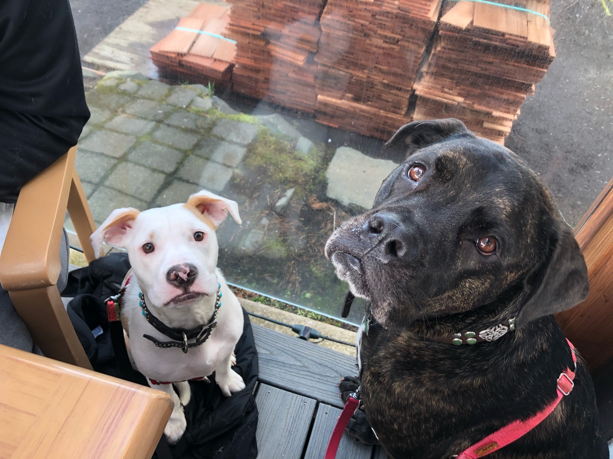
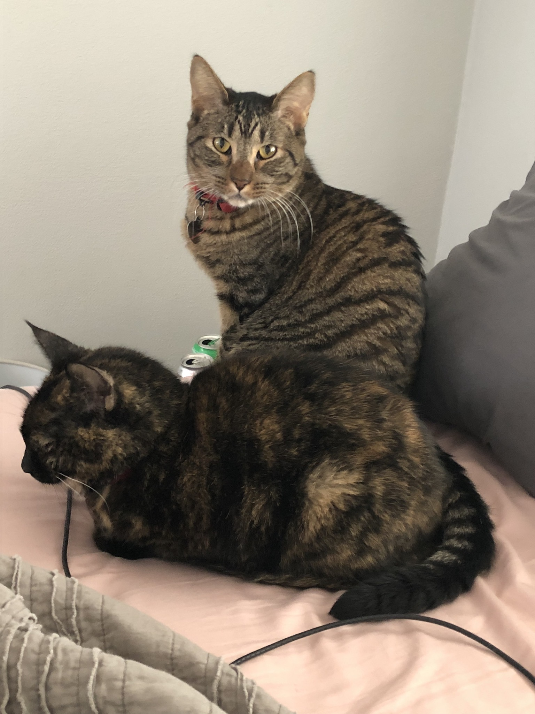

I was born and raised in Portland, Oregon. After graduating from Lincoln High School, I played a year of Division III baseball at Pacific University in Forest Grove, OR. A few years (and schools) later, I graduated from Portland State with a degree in Communication Studies.
While going to school back home in Portland, I began coaching baseball at my alma mater and discovered a passion for coaching/teaching. I turned that passion into my first job after graduation working as a Special Eduaction Paraeducator. It was an incredibly rewarding experience to be part of a team that ensured that special education students received a more equitable and inclusive high school education. After five years as a para and nine years coaching baseball, I was ready for a new challenge. That is how I now find myself as a student at Epicodus.
I currently live in SE Portland with my fiance and our two cats and two dogs.


Most of my hobbies and interests are sports-related. I really enjoy staying physically active through playing sports. I don't love just working out or just running so being on a basketball or softball team or having a race to train for really helps me stay in shape. That has been significantly more difficult during the pandemic, unfortunately. On the bright side, while working from home I had much more time and energy to take my dogs on long walks around the neighborhood.
I also love attending live sporting events. I have season tickets to the Portland Thorns and am a huge women's soccer fan in general. I was lucky enough to be able to travel to France for the 2019 Women's World Cup. It was absolutely incredible. I love going to Portland Timbers games as well and try to get to as many games as I can during a season. My first sporting love though was the Portland Trail Blazers. I remember going to games as a young kid at the Memorial Colliseum before the Rose Garden was built.
My top 5 favorite games I've seen in person:
My other hobbies and interests include: